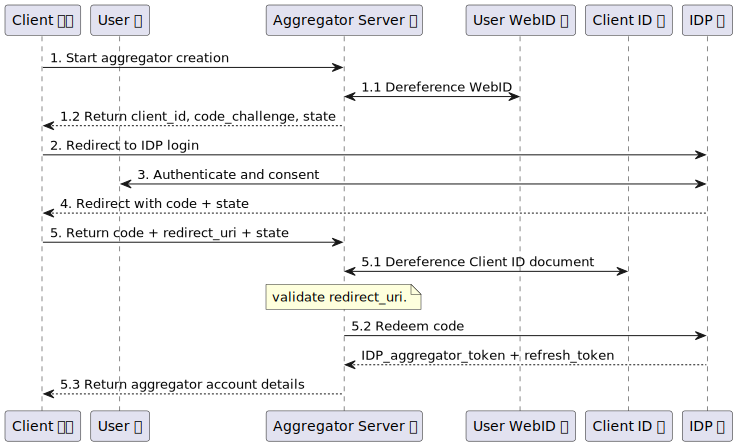
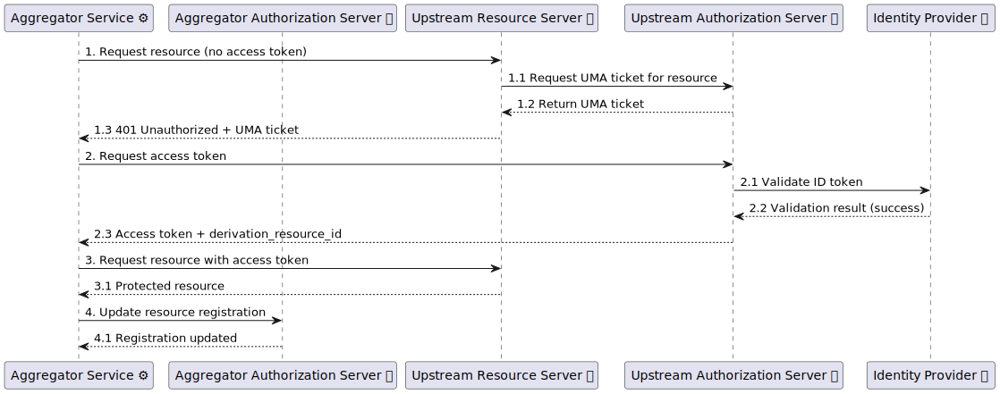

1. Introduction & Scope
The introduction for the Aggregator specification will be expanded in future revisions.
TODO add that the use of semantics is encouraged but not mandatory.
2. Definitions
add a link to other specs used: WebID, OIDC, UMA
-
IDP Server (IDPS): An Identity Provider server that supports OIDC and issues OIDC tokens.
NOTE: that this is different from the Authorization Server (AS) that issues UMA RPT tokens. The IDP Servers are used to provide identity to users. The Authorization Servers checks this identity and issues RPT tokens for resource servers.
-
Authorization Server (AS): An OAuth2 Authorization Server that supports UMA and issues RPT tokens.
-
Resource Server (RS): An OAuth2 Resource Server that protects resources and accepts RPT tokens issued from a Authorization Server.
-
Aggregator Server: A server that hosts multiple Aggregators.
-
Aggregator: A service that manages multiple Aggregator Services and allows user to create and use them.
-
Aggregator Service: A service that aggregates data from multiple Resource Servers on behalf of a user.
-
Client: An application that interacts with the Aggregator Service.
-
ClientID: A JSON-LD document that describes a Client. It is dereferenceable via a URL.
-
User: A person who owns resources on Resource Servers and uses the Client and Aggregator.
-
OIDC token
-
Authorization server
-
Resource server
3. Architecture & Resource Model
This section describes the high-level architecture of an Aggregator deployment and the resource model exposed by this specification. It connects the terminology in § 2 Definitions to the endpoint definitions in later sections.
3.1. Actors and Responsibilities
The protocol distinguishes the following parties:
-
Client: An application acting on behalf of an end-user to create Aggregator Instances and configure Aggregator Services.
-
Aggregator Server: The server that exposes public discovery information and a registration API to create Aggregator Instances.
-
Aggregator Instance: A user-specific (or tenant-specific) logical instance created via registration, exposing instance metadata and a management API.
-
Aggregator Service: A configured data-processing pipeline created and managed within an Aggregator Instance.
-
Identity Provider (IdP): Issues OIDC tokens used to prove identity as part of registration and upstream authorization flows.
-
Authorization Server (AS): A UMA-capable OAuth2 Authorization Server that issues RPTs for protected resources.
-
Resource Server (RS): An upstream resource server hosting data that the Aggregator Service may access on behalf of the user.
3.2. Resource Types
This specification defines HTTP resources at three levels:
-
Aggregator Server resources: discovery and registration (see § 4 Aggregator Server Discovery (Server Metadata) and § 5 Aggregator Registration (Provisioning) API).
-
Aggregator Instance resources: instance metadata and management (see § 7 Aggregator Instance Metadata (Status) and § 8 Aggregator Management API (Configuration)).
-
Aggregator Service resources: a service collection and service members managed under the instance (see § 8.2 Service Collection (/config/services) and § 8.3 Service Resource (/config/services/{service_id})).
3.3. Base URLs and Addressing
An implementation MUST define a stable base URL for:
-
the Aggregator Server (the _server base URL_); and
-
each Aggregator Instance (the _instance base URL_).
All paths in this specification are expressed relative to either the server base URL or the instance base URL:
-
Server-relative resources: the server metadata resource at
/(see § 4.1 Server Metadata Resource (/)), the registration API at/registration(see § 5 Aggregator Registration (Provisioning) API), and the public resources./client.jsonand./transformations(see § 4.2 Client Metadata Document (./client.json) and § 4.3 Transformation Catalog (./transformations)). -
Instance-relative resources: the instance metadata resource at
/(see § 7 Aggregator Instance Metadata (Status)) and the management API under/config/*(see § 8 Aggregator Management API (Configuration)).
An implementation MAY use either of the following instance addressing patterns:
-
Host-based instances:
https://{instance-id}.aggregator.example/ -
Path-based instances:
https://aggregator.example/{instance-id}/
If an implementation supports multiple patterns, it MUST ensure that URLs returned in representations are self-consistent for a given instance (i.e., all links for that instance share the same instance base URL). Clients SHOULD treat server-provided URLs as authoritative and avoid constructing URLs by string concatenation.
3.4. Discovery and Entry Points
-
The Aggregator Server exposes a public discovery resource at its server base URL (see § 4.1 Server Metadata Resource (/)).
-
Clients create (or obtain access to) an Aggregator Instance via the registration API (see § 5 Aggregator Registration (Provisioning) API).
-
The resulting instance base URL is the entry point for instance metadata (see § 7 Aggregator Instance Metadata (Status)) and instance management (see § 8 Aggregator Management API (Configuration)).
3.5. Security Boundaries
All security requirements are defined in § 6 Security Model (Authentication & Authorization). At a high level:
-
Public (no authentication): the server metadata resource (see § 4.1 Server Metadata Resource (/)) and the resources it links to, such as the transformation catalog and client metadata document (see § 4.3 Transformation Catalog (./transformations) and § 4.2 Client Metadata Document (./client.json)).
-
Protected (UMA): the instance metadata resource (see § 7 Aggregator Instance Metadata (Status)) and all resources under the management API (see § 8 Aggregator Management API (Configuration)).
3.6. Example URL Layout (Non-normative)
Given an Aggregator Server at https://aggregator.example/ and a path-based Aggregator instance at https://aggregator.example/abc123/:
-
Server metadata:
https://aggregator.example/ -
Registration:
https://aggregator.example/registration -
Transformation catalog:
https://aggregator.example/transformations -
Instance metadata:
https://aggregator.example/abc123/ -
Instance Transformation catalog:
https://aggregator.example/abc123/config/transformations -
Service collection:
https://aggregator.example/abc123/config/services
4. Aggregator Server Discovery (Server Metadata)
4.1. Server Metadata Resource (/)
Endpoint that exposes the public metadata about the aggregator server. This endpoint MUST be accessible without authentication and MUST provide at least the following information:
-
id: (OPTIONAL) The unique identifier of the aggregator server (The current IRI).
-
registration_endpoint: The URL of the registration endpoint (§ 5 Aggregator Registration (Provisioning) API).
-
supported_registration_types: A list of strings that are valid registration types supported by the server (e.g., "client_credentials", "authorization_code") (§ 5 Aggregator Registration (Provisioning) API).
-
version: The version of the aggregator specification that the server adheres to.
-
client_id: URL of the client metadata document § 4.2 Client Metadata Document (./client.json).
-
transformations: URL of the transformation catalog § 4.3 Transformation Catalog (./transformations).
It must be accessible with JSON and might use content negotiation based on [RFC9110] for semanticly anotated versions.
TODO add example with semantics? add hasTransformationCollection
4.2. Client Metadata Document (./client.json)
Endpoint that exposes the client identifier used for authorization.
TODO what needs to be included?
TODO add example with semantics
4.3. Transformation Catalog (./transformations)
This endpoint returns a RDF document describing the transformations supported by the aggregator server on a server level. This RDF document SHOULD be exposed using content negotiation based on HTTP. The transformations MUST be described using FnO.
@prefix aggr: <https://spec.knows.idlab.ugent.be/aggregator-protocol/latest/#> . @prefix trans: <http://aggregator.example.org/transformations#> . @prefix fno: <https://w3id.org/function/ontology#> . @prefix rdf: <http://www.w3.org/1999/02/22-rdf-syntax-ns#> . @prefix xsd: <http://www.w3.org/2001/XMLSchema#> . <> a aggr : TransformationCollection ; dct : title "Aggregator transformations" ; aggr : hasTransformation trans : AggregateSources . aggr : hasTransformation trans : AggregateSources2 . trans : AggregateSources a fno : Function ; fno : name "A Aggregator Service that combines a list of sources" ^^ xsd : string ; fno : expects ( trans : Sources ) ; fno : returns ( trans : Result ) . trans : Sources a fno : Parameter ; fno : predicate trans : sources ; fno : type rdf : List ; fno : required "true" ^^ xsd : boolean . trans : Result a fno : Output ; fno : predicate trans : result ; fno : type xsd : string .
The specificity of the transformation is up to the server owner.
The transformations CAN have a link to a implementation with fno:Implementation if needed.
External FnO functions MAY be used using rdfs:seeAlso.
Pre defined pipelines MAY be used using fno:Compositions.
TODO we can have ./transformation/AggregateSources so ./transformation can link to them
TODO how do we allow an aggregator that can run any transformation?
5. Aggregator Registration (Provisioning) API
This section describes how aggregators are managed on the Aggregator Server level. The authorization for these endpoints is defined by the implementation and up to the Aggregator provider to decide. The user requires authenticated requests to manage their aggregator accounts on wich the Aggregator provider can base their authorization decisions. The tokens used in these requests (IPD_client_token) prove the identity of the user and the client (ClientID) used to access the aggregator.TODO add a defenition of the endpoint here, after we go into the flows of how they are used.
TODO add that after creation the aggregator should register the resources to the AS.
5.1. Aggregator Creation (Registration)
This section describes how clients can create an Aggregator. There exists different flows to create an aggregator depending on the registration type.TODO where to add versioning info?
TODO where to use DPOP tokens?
TODO what about HTTP error handling?
TODO mention that the aggregator can be either host based or path based: {id}.aggregator.org or aggregator.org/{id}/
TODO the result of aggregator creation returns the ID and the base url of the aggregator (for example {id}.aggregator.org or aggregator.org/{id}/).
5.1.1. provision Flow
The provision flow allows clients to create an Aggregator with its own identity.
This lets resource owners target access-control policies at the aggregator’s dedicated WebID instead of having the aggregator impersonate another user’s WebID.
1. Client starts flow with Aggregator Server
The client calls the registration endpoint authenticated with its IPD_client_token.
POST /registration HTTP / 1.1 Authorization : Bearer <IPD_client_token> Content-Type : application/json { "registration_type" : "provision" , }
2. Aggregator Server provisions a WebID and registers it at the IDP
The Aggregator Server creates a WebID document and registers a new account with an IDP for that WebID.
Using the credentials of this new account the Aggregator Server CAN perform a client credentials flow to obtain the IDP_aggregator_token (and accompanying refresh token) to authorize the aggregator acting under its own WebID.
TODO should this WebID specify that it is an aggregator/agent?
3. Aggregator Server creates an aggregator
Using the obtained tokens, the Aggregator Server creates an aggregator linked to the user, and returns the aggregator metadata and newly created WebID. The aggregator CAN NOT give these tokens or client credentials to the client.
5.1.2. authorization_code Flow
The authorization_code flow allows clients to create an aggregator that acts on behalf of the end-user, but with a token that is scoped specifically for the aggregator.

1. Client starts flow with Aggregator Server
The client begins by asking the Aggregator to bootstrap an authorization_code registration and indicate which authorization server should be used. The Aggregator responds with the public parameters required for the OIDC authorization request.
POST /registration HTTP / 1.1 Authorization : Bearer <IPD_client_token> Content-Type : application/json { "registration_type" : "authorization_code" , "authorization_server" : "https://as.example" }
1.1 Aggregator dereferences the WebID to discover the IDP
Using the UMA authorization context, the Aggregator dereferences the user’s WebID profile document to locate the Solid/OIDC issuer metadata and determine which IDP endpoints must be used for the next steps.
1.2 Aggregator responds with public parameters
After finishing WebID discovery and storing the PKCE verifier/state, the Aggregator returns the public parameters required for the IDP authorization request.
HTTP / 1.1 201 Created Content-Type : application/json { "client_id" : "https://aggregator.example/client.jsonld" , "code_challenge" : "1uLSZp2..." , "code_challenge_method" : "S256" , "state" : "1eb7c8f5..." }
The Aggregator generates the PKCE verifier/challenge pair plus a random state, persists them together with the pending registration, and returns only the public portions (client_id, code_challenge, state) to the client application.
The authorization_server value identifies the UMA Authorization Server (AS) that governs resource policies; once the Aggregator evaluates the user’s authorization token it can dereference its WebID and determine which Identity Provider (IDP) must be used for the subsequent OIDC exchange.
TODO How does the aggregator register with the AS?
2. Client sends the end-user through the IDP authorization endpoint
Using the information supplied by the Aggregator, the client constructs an authorization request against the Identity Provider.
The redirect_uri is under control of the client application and MUST already be registered in the JSON-LD client metadata document hosted at the dereferenceable client_id.
GET https://idp.example/authorize?
response_type=code&
client_id=https%3A%2F%2Faggregator.example%2Fclient.jsonld&
redirect_uri=https%3A%2F%2Fapp.example%2Fcallback&
scope=openid%20webid%20offline_access&
code_challenge=1uLSZp2...&
code_challenge_method=S256&
state=1eb7c8f5...
3. User authenticates and consents at the IDP
The IDP performs its usual login and consent screens, after which it issues an authorization_code tied to the Aggregator’s confidential client.
4. IDP redirects the user agent back to the client’s redirect_uri
HTTP / 1.1 302 Found Location : https://app.example/callback?code=SplxlOBeZQQYbYS6WxSbIA&state=1eb7c8f5...
5. Client posts the authorization code back to the Aggregator
The client sends the code, redirect URI, and echoed state to the registration endpoint so the Aggregator can finish the flow.
POST /registration HTTP / 1.1 Authorization : Bearer <IPD_client_token> Content-Type : application/json { "registration_type" : "authorization_code" , "code" : "SplxlOBeZQQYbYS6WxSbIA" , "redirect_uri" : "https://app.example/callback" , "state" : "1eb7c8f5..." }
5.1 Aggregator dereferences the client metadata
The Aggregator dereferences the client_id JSON-LD document to confirm the registered redirect URIs, contact metadata, and other security requirements, then verifies that the supplied redirect_uri belongs to that set and that the returned state matches the stored nonce.
5.2 Aggregator redeems the authorization code at the IDP token endpoint
POST /token HTTP / 1.1 Host : idp.example Content-Type : application/x-www-form-urlencoded Authorization : Basic <aggregator-client-auth> grant_type = authorization_code & code = SplxlOBeZQQYbYS6WxSbIA & redirect_uri = https%3A%2F%2Fapp.example%2Fcallback & client_id = https%3A%2F%2Faggregator.example%2Fclient.jsonld & code_verifier = Hjs8...stored...
The IDP verifies the authorization_code, ensures the redirect_uri matches the original authorization request, and recomputes the PKCE challenge from the supplied code_verifier. If everything matches, it returns:
HTTP / 1.1 200 OK Content-Type : application/json { "access_token" : "<IDP_aggregator_token>" , "refresh_token" : "<refresh_token>" , "token_type" : "Bearer" , "expires_in" : 3600 }
5.3 Aggregator finalizes the account and responds
Using the issued tokens, the Aggregator creates the aggregator account linked to the user and returns the aggregator account details to the client.
HTTP / 1.1 201 Created Content-Type : application/json { "aggregator_id" : "agg-7890" , "authorization_server" : "https://as.example" , }
5.1.3. client_credentials Flow
The client_credentials flow allows clients to create an aggregator by using the OAuth2 Client Credentials Flow to obtain an OIDC token from an Identity Provider (IDP) server.
NOTE: This flow gives the aggregator complete access to the user’s resources and policies without user consent. This flow should only be used in trusted environments, or when a user creates an account for the aggregator.
1. Client starts flow with Aggregator Server
The client explicitly asks the Aggregator to act with full credentials for the provided WebID, indicating which UMA Authorization Server manages the protected resources. Because this flow hands the Aggregator long-lived credentials, it should only be used when the user intentionally provisions the Aggregator as a trusted service account.
POST /registration HTTP / 1.1 Authorization : Bearer <IPD_client_token> Content-Type : application/json { "registration_type" : "client_credentials" , "authorization_server" : "https://as.example" , "webid" : "https://user.example/webid#me" , "username" : "alice@example.org" , "password" : "s3cr3t-password" }
2. Aggregator Server performs credential bootstrap with the IDP
The Aggregator uses the supplied username/password (plus the WebID context) to authenticate against the Identity Provider’s management or token endpoint, registering (or reusing) a confidential client that represents the Aggregator’s service account for that user. It then runs an OAuth 2.0 client_credentials grant using the obtained client_id/client_secret to mint an IDP_aggregator_token scoped to the user’s WebID.
POST /token HTTP / 1.1 Host : idp.example Content-Type : application/x-www-form-urlencoded Authorization : Basic <aggregator-client-auth> grant_type = client_credentials & webid = https%3A%2F%2Fuser.example%2Fwebid%23me & scope = openid%20webid%20offline_access
The IDP issues access and refresh tokens that grant the Aggregator the same capabilities as the user’s own credentials.
HTTP / 1.1 200 OK Content-Type : application/json { "access_token" : "<IDP_aggregator_token>" , "refresh_token" : "<refresh_token>" , "token_type" : "Bearer" , "expires_in" : 7200 }
3. Aggregator Server creates (or updates) the aggregator account
Armed with the IDP_aggregator_token, the Aggregator persists the account for the specified WebID, associates it with the requesting user, and returns the aggregator account metadata (aggregator identifier, token expiry, UMA AS linkage, etc.) to the client.
5.1.4. device_code Flow
NOTE: TODO This flow is not yet specified.
5.2. Aggregator Login
The login flow allows users to update the tokens of their existing aggregator. This flow can be used to refresh the tokens in case they have expired. The flow is the same as with creating an aggregator but an aggregator_id parameter is provided in step 1. The exact steps depend on the registration_type used when creating the aggregator. For example for theauthorization_code flow:
POST /registration HTTP / 1.1 Authorization : Bearer <IPD_client_token> Content-Type : application/json {"registration_type" : "authorization_code" , "aggregator_id" : "agg-7890" }
5.3. Aggregator Deletion
The delete flow allows users to delete their existing aggregator. This flow is done by doing a DELETE request to the registration endpoint with the aggregator_id parameter.DELETE /registration HTTP / 1.1 Authorization : Bearer <IPD_client_token> Content-Type : application/json {"aggregator_id" : "agg-7890" }
6. Security Model (Authentication & Authorization)
This section describes how the Aggregator handles authentication and authorization for:
-
outgoing requests from the Aggregator to upstream Resource Servers; and
-
incoming requests from Clients to the Aggregator.
The Aggregator relies on the Authorization for Data Spaces (A4DS) specification to authenticate Clients and authorize access to resources. For streaming or non-HTTP interfaces, the Aggregator MAY additionally use the Service Authorization for Data Spaces (SA4DS) specification. All Aggregator endpoints are protected using User-Managed Access (UMA).
NOTE: The following behavior extends the A4DS specification and is intended to be incorporated in a future version of A4DS.
6.1. Upstream Access (Requesting)
TODO: how does the Aggregator tell the Authorization Server (AS) which transformation it intends to perform on the data?
Equipped with an identity token (ID token) from an Identity Provider (IdP) as described in § 5 Aggregator Registration (Provisioning) API, the Aggregator Service follows the Authorization for Data Spaces (A4DS) specification to obtain access tokens for upstream Resource Servers.

1. Requesting the upstream resource without token
The Aggregator Service requests the upstream resource without an access token. If the resource is protected with UMA, the Upstream Resource Server responds with a 401 Unauthorized status and a UMA ticket.
1.1 Upstream Resource Server requests ticket from Upstream Authorization Server
The Upstream Resource Server requests a UMA ticket from its Upstream Authorization Server.
1.2 Upstream Resource Server returns ticket
The Upstream Resource Server returns the UMA ticket to the Aggregator Service.
HTTP / 1.1 401 Unauthorized WWW-Authenticate : UMA realm="solid", as_uri="https://upstream.as.example.org/uma", ticket="tkt-URS"
2. Requesting an access token from the Upstream Authorization Server
Using the ID token obtained from the IdP during registration, the Aggregator Service requests an access token from the Upstream Authorization Server (of the Upstream Resource Server).
In this request, the Aggregator Service SHOULD request the additional scope urn:knows:uma:scopes:derivation-creation to enable the Aggregator functionality.
The Upstream Authorization Server MAY require additional claims to issue the access token.
TODO: if this resource has already been requested, the Upstream Authorization Server already has a derivation_resource_id for this Aggregator. Does the Aggregator need to request a new one, or can it reuse the existing one?
POST /token HTTP / 1.1 Host : upstream.as.example.org Content-Type : application/json {"grant_type" : "urn:ietf:params:oauth:grant-type:uma-ticket" , "ticket" : "tkt-URS" , "scope" : "urn:knows:uma:scopes:derivation-creation" "claim_token" : "IDP_aggregator_token" , "claim_token_format" : "http://openid.net/specs/openid-connect-core-1_0.html#IDToken" , }
The Upstream Authorization Server validates the ID token with the Identity Provider that issued it.
2.2 Upstream Authorization Server returns access token and derivation resource identifier
Adding the derivation-creation scope signals to the Authorization Server that the Aggregator intends to create a derived resource based on the requested upstream resource.
The Authorization Server MUST then include a derivation_resource_id in the response.
The derivation_resource_id is a unique identifier that the Aggregator will use to reference this upstream resource when creating derived resources.
The Authorization Server can link this identifier to the Aggregator’s identity to manage and track derived resources.
HTTP / 1.1 200 OK Content-Type : application/json {"access_token" : "uas-at" , "derivation_resource_id" : "handle-id-1" }
3. Accessing the upstream resource with token
The Aggregator Service then requests the resource from the Upstream Resource Server using the access token obtained from the Upstream Authorization Server. This access token MAY be used multiple times until it expires or is revoked.
4. Resource registration of the Aggregator Service
Finally, the Aggregator Service MUST update the resource registration at its own Authorization Server to signal that it used this derivation_resource_id to create derived resources.
The Authorization Server MUST expire all previous access tokens for this resource.
PUT /resource-registration/agg-service-123 HTTP / 1.1 Host : as.example.org Content-Type : application/json { ..."resource_relations" : { "prov:wasDerivedFrom" : { "issuer" : "https://as.example.org" , "derivation_resource_id" : "handle-id-1" } } }
If a resource isn’t used anymore by the Aggregator Service, the Aggregator Service SHOULD update the resource registration to remove the derivation_resource_id from the prov:wasDerivedFrom relations, and MAY expire all previous access tokens for this resource.
Also the Aggregator Service SHOULD delete the resource from its Upstream Resource Server, by following the Resource ID deletion procedure.
6.2. Client Access (Serving)
When a Client requests access to resources from the Aggregator Service, the Aggregator Service acts as a Resource Server and relies on UMA to authorize access. For each incoming request:
-
The Client sends a request for a (derived) resource to the Aggregator Service, with or without a valid access token.
-
The Aggregator Service requests a UMA ticket for that resource from its Authorization Server and, if necessary, returns a
401 Unauthorizedresponse containing the ticket to the Client. -
The Client interacts with the Aggregator Authorization Server (and, if required, upstream Authorization Servers) to obtain the access tokens needed to access the derived resource.
-
Once authorization succeeds, the Client retries the request to the Aggregator Service with a valid access token, and the Aggregator Service returns the derived resource.

1. Client requests derived resource from Aggregator Service without token The Client sends a request to the Aggregator Service for a derived resource without including a valid Requesting Party Token (RPT), or with an RPT that does not grant sufficient permission.
When a Client requests access to a derived resource from the Aggregator Service, a normal UMA flow follows.
1.1 Aggregator Service requests UMA ticket from its Authorization Server
The Aggregator Service, acting as a UMA Resource Server, requests a UMA ticket for the requested derived resource from its Authorization Server.
The Aggregator includes the internal identifier of the derived resource in the permission request.
During ticket creation, the Aggregator SHOULD validate that the derivation_resource_id used to create the derived resource is still valid.
This validation can be delegated to the Authorization Server by including the derivation_resource_id (and its issuer) in the permission request, so that the Authorization Server can verify it with the upstream Authorization Server.
If the derivation_resource_id is still valid, the Authorization Server returns a UMA ticket as usual.
If it is no longer valid (for example, because the upstream Authorization Server has removed the referenced resource), the Aggregator MUST treat the derived resource as invalid and MUST recreate the Aggregator Service (including its resource registrations).
1.2 Aggregator Service returns 401 Unauthorized with ticket
If the Client did not present a valid RPT, or if the RPT does not cover the requested permission, the Aggregator Service returns a 401 Unauthorized response containing the UMA ticket issued by its Authorization Server.
HTTP / 1.1 401 Unauthorized WWW-Authenticate : UMA realm="aggregator", as_uri="https://agg-as.example.org/uma", ticket="tkt-A2"
2. Client presents ticket to Aggregator Authorization Server
The Client discovers the Aggregator Authorization Server (for example, via the as_uri parameter in the WWW-Authenticate header) and sends a UMA grant request to exchange the ticket for an RPT.
The Client includes any claim tokens it already has (for example, its ID token) in the request.
{ "grant_type" : "urn:ietf:params:oauth:grant-type:uma-ticket" , "ticket" : "tkt-A2" , "claim_tokens" : [ { "claim_token" : "OIDC_token" , "claim_token_format" : "http://openid.net/specs/openid-connect-core-1_0.html#IDToken" } ] }
2.1 Aggregator Authorization Server introspects Client access tokens The Aggregator Authorization Server validates the claim tokens (for example, by introspecting access tokens and/or verifying ID tokens) and evaluates its authorization policies for the requested derived resource.
2.2 Aggregator Authorization Server returns need_info (if upstream access is required)
If access to the derived resource depends on access to upstream resources, and the Client has not yet presented suitable upstream access tokens, the Aggregator Authorization Server MAY respond with a need_info error requesting additional claim tokens for the upstream resources.
In that case, the Authorization Server MUST add the issuer, derivation_resource_id, and resource_scopes entries to the required_claims array to indicate which upstream Authorization Server and which resource the Client must obtain access to.
-
**
issuer:** identifies the upstream Authorization Server. -
**
derivation_resource_id:** contains the identifier (or identifiers) provided when the Aggregator Service requested an upstream access token. -
**
resource_scopes:** list enumerates the scopes required to access the upstream resource and MUST include a derivation scope.
{ "error" : "need_info" , "ticket" : "tkt-A2" , "required_claims" : [ { "claim_token_format" : "urn:ietf:params:oauth:token-type:access_token" , "details" : { "issuer" : "https://a.example.org" , "derivation_resource_id" : "handle-id-1" , "resource_scopes" : [ "urn:knows:uma:scopes:derivation-read" ] } } ] }
3. Client requests upstream access tokens
The Client SHOULD then request access tokens from the Authorization Server of the upstream Resource Server with the required scopes, including the derivation scope indicated in the required_claims.
{ "grant_type" : "urn:ietf:params:oauth:grant-type:uma-ticket" , "permissions" : [ { "resource_id" : "handle-id-1" , "scopes" : [ "urn:knows:uma:scopes:derivation-read" ] } ], "claim_token" : "OIDC_token" , "claim_token_format" : "http://openid.net/specs/openid-connect-core-1_0.html#IDToken" }
4. Client presents upstream tokens to Aggregator Authorization Server Once the Client has obtained the required upstream access tokens, it sends another UMA grant request to the Aggregator Authorization Server, presenting both its ID token and the upstream access tokens as claim tokens together with the original Aggregator ticket.
{ "grant_type" : "urn:ietf:params:oauth:grant-type:uma-ticket" , "ticket" : "tkt-A2" , "claim_tokens" : [ { "claim_token" : "OIDC_token" , "claim_token_format" : "http://openid.net/specs/openid-connect-core-1_0.html#IDToken" }, { "claim_token_format" : "urn:ietf:params:oauth:token-type:access_token" , "claim_token" : "as-at-2" } ] }
The Aggregator Authorization Server MUST verify the provided access tokens with the upstream Authorization Servers to confirm that the Client is authorized to access the upstream resources. If all policy checks succeed, the Aggregator Authorization Server issues an RPT for the requested derived resource.
5. Client requests derived resource from Aggregator Service with RPT Finally, the Client retries the original request to the Aggregator Service, this time including the RPT it obtained from the Aggregator Authorization Server. The Aggregator Service validates or introspects the RPT and, if it is active and grants the required permissions, returns the derived resource to the Client.
The Aggregator MAY implement the SA4DS specification to guard endpoints with streaming or other non-HTTP based interfaces.
7. Aggregator Instance Metadata (Status)
TODO allow this to be json-ld with more semantics?
The Aggregator Instance Metadata resource ({aggregator-url}/) allows clients to retrieve the current status of their aggregator.
This endpoint MUST be guarded by the authentication and authorization mechanisms described in the § 6 Security Model (Authentication & Authorization).
The endpoint MUST return the following information about the aggregator, but additional fields MAY be included as needed:
- id: (string) The unique identifier of the aggregator.
- created_at: (datetime) The timestamp when the aggregator was created.
- login_status: (boolean) Indicates whether the token of the aggregator is currently valid.
- token_expiry: (datetime) The timestamp when the aggregator’s token will expire.
- transformations: (string) The URL of the transformations endpoint.
- services: (string) The URL of the services endpoint.
8. Aggregator Management API (Configuration)
The Aggregator Management API gives an authenticated client a complete view on the Aggregator: it exposes the transformations that can be used to assemble a pipeline and it lets the client create, inspect, and remove concrete Aggregator Services (called _actors_ in the reference implementation). All configuration routes:
-
MUST be protected by the authentication and authorization mechanisms defined in § 6 Security Model (Authentication & Authorization); an unauthorized request MUST fail before reaching the handler.
-
MUST answer CORS preflight requests by responding to
OPTIONSwith204 No Contentand the permissiveAccess-Control-Allow-*headers shown in the reference implementation (AuthorizationMUST be listed inAccess-Control-Allow-Headers). -
MUST respond with JSON using
Content-Type: application/jsonunless explicitly stated otherwise.
8.1. Available Transformations (Authenticated)
The /config/transformations resource is an extention on the public /transformations endpoint defined in § 4.3 Transformation Catalog (./transformations).
It allows clients to discover which transformations are available.
This endpoint, contrasting to the public /transformations, MAY be user specific and MUST require authentication.
A client SHOULD combinge the information from this endpoint with the public /transformations endpoint to get a complete view on the available transformations.
The endpoint follows the same content negotiation rules and other requirements as the public /transformations endpoint.
8.2. Service Collection (/config/services)
/config/services represents the collection of configured Aggregator Services.
The Aggregator MUST register this UMA resource with the Authorization Server and advertise the read and create scopes so that clients can both inspect and add members.
HEAD-
Returns the collection metadata. The server MUST respond with
200 OK,Content-Type: application/json, and anETagheader whose value increases whenever a service is added or removed. TheETagallows clients to detect collection changes without re-downloading it. GET-
Returns the current list of service identifiers. The payload MUST be a JSON object with a
servicesarray that only contains strings, and SHOULD expose JSON-LD semantics by referencing the Aggregator vocabulary defined in § 10 RDF Vocabulary (aggr:). Example:TODO add a "formal" defenition of the JSON structure
The server MUST set the same{ "@context" : { "id" : "@id" , "services" : { "@id" : "https://spec.knows.idlab.ugent.be/aggregator-protocol/latest/service" , "@container" : "@set" , "@type" : "@id" }, "aggregator" : "https://aggregator.example.org/" }, "id" : "https://aggregator.example.org/config/services" , "services" : [ "urn:uuid:410b093c-04b3-4fac-87be-4d393f40b2e5" , "aggregator:service/42" ] } ETagvalue as theHEADresponse. POST-
Creates a new service. The request body MUST contain a pipeline description that references the available transformations (implementations MAY decide on the exact media type). Upon successful creation the server MUST
-
Persist the new service and increment the collection
ETag. -
Register a new UMA resource for
/config/services/{service_id}with thereadanddeletescopes so the creator—or any other party with an RPT containing those scopes—can manage the service. -
Return
201 Created, setContent-Type: application/json, and include the full JSON representation of the service in the response body.
If the request body is invalid the server MUST respond with
400 Bad Request. Failures while instantiating the service MUST result in500 Internal Server Error. -
8.3. Service Resource (/config/services/{service_id})
Operations on an individual service require the read and delete scopes on the /config/services/{service_id} path.
The path component {service_id} MUST exactly match one of the identifiers returned by the collection resource; a request for a non-existent service MUST return 404 Not Found, while malformed paths MUST yield 400 Bad Request.
HEAD-
Returns the service metadata. The server MUST respond with
200 OKandETag, andContent-Typeheaders whose value MUST change whenever the service state changes. GET-
A JSON representation of the service SHOULD be returned with
200 OKand with aContent-Type. These representations MAY include a JSON-LD context that maps theaggr:terms defined in § 10 RDF Vocabulary (aggr:) so clients can consume typed data, and content negotiation SHOULD be supported. The representation MUST include at least the following fields:-
id: The service identifier.
-
status: The current status of the service (e.g., "running", "stopped", "error").
-
transformation: The transformation used by the service.
-
created_at: Timestamp of when the service was created.
-
location: URL where the service can be accessed.
-
DELETE-
Stops and removes the service. The Aggregator MUST stop the running pipeline, delete the persisted service entry, increment the collection
ETag, unregister the/config/services/{service_id}UMA resource, and respond with200 OK. Clients that held the service identifier MUST treat it as invalid after receiving the success response.
TODO the GET can be simple JSON but also JSON-LD with context? Example? Here transform will be either a string or an object, respectively.
9. Client Workflows (Non-normative)
This section gives some examples on how a client can create, find, use and delete services on the Aggregator. This section is non-normative, and is only meant to illustrate the usage of the various endpoints defined in this specification. This section assumes the client has already created an Aggregator using the Aggregator Registration API (§ 5 Aggregator Registration (Provisioning) API) and is able to authenticate using the mechanisms defined in § 6 Security Model (Authentication & Authorization).
9.1. Creating a Service
To create a new Aggregator Service, a client starts by doing a POST request to the /config/services endpoint.
The contents will be detailed later as this request fails due to missing authentication.
The Aggregator fetches a ticket from the Authorization Server with the resource_id 1a2b-creation-endpoint it got during asset creation.
HTTP/1.1 /ticket
Host: as.example.org
Content-Type: application/json
{
"resource_id": "1a2b-creation-endpoint",
"resource_scopes": ["https://example.org/modes/create"]
}
This returns a ticket that discribes the request done to the RS (the Aggregator in this case).
This ticket is then returned to the client in a 401 Unauthorized response.
HTTP / 1.1 401 Unauthorized WWW-Authenticate : UMA realm="example", as_uri="https://as.example.org", ticket="eyJhbGciOiJIUzI1NiIsInR5cCI6IkpXVCJ9..."
The client then requests an RPT from the AS using the ticket.
The original request can then be retried, this time including the RPT in the Authorization header.
POST /config/services HTTP / 1.1 Host : aggregator.example.org Authorization : Bearer ey... Content-Type : text/turtle @prefix trans: <http://aggregator.example.org/transformations> @prefix fno: <https://w3id.org/function/ontology#> _ : execution a fno : Execution ; fno : executes trans : AggregateSources ; trans : sources ( <http://example.org/source/1> <http://example.org/source/2> ) .
If the request is valid, the Aggregator will create a new service, register the appropriate UMA resource, and return a 201 Created response with the service representation in the body.
HTTP / 1.1 201 Created Content-Type : application/ld+json {"@context" : { "id" : "@id" , "type" : "@type" , "Service" : "https://spec.knows.idlab.ugent.be/aggregator-protocol/latest/Service" , "status" : "https://spec.knows.idlab.ugent.be/aggregator-protocol/latest/status" , "services" : "https://aggregator.example.org/config/services/" , "created_at" : { "@id" : "https://www.w3.org/ns/prov#generatedAtTime" , "@type" : "http://www.w3.org/2001/XMLSchema#dateTime" }, "location" : { "@id" : "https://schema.org/url" , "@type" : "@id" }, "transformation" : { "@id" : "https://spec.knows.idlab.ugent.be/aggregator-protocol/latest/transformation" , "@context" : { "id" : "@id" , "type" : "@type" , "fno" : "https://w3id.org/function/ontology#" , "trans" : "http://aggregator.example.org/transformations#" , "Execution" : "fno:Execution" , "executes" : { "@id" : "fno:executes" , "@type" : "@id" }, "sources" : { "@id" : "trans:sources" , "@container" : "@list" , "@type" : "@id" } } } }, "id" : "services:410b093c-04b3-4fac-87be-4d393f40b2e5" , "type" : "Service" , "status" : "running" , "transformation" : { "type" : "Execution" , "executes" : "trans:AggregateSources" , "sources" : [ "http://example.org/source/1" , "http://example.org/source/2" ] }, "created_at" : "2024-01-01T12:00:00Z" , "location" : "https://example.org/410b093c-04b3-4fac-87be-4d393f40b2e5" }
9.2. Discovering Services
To discover the services currently registered on the Aggregator, a client can do a GET request to the /config/services endpoint.
9.3. Using a Simple Service
As a complex example the resulting service could be an aggregator that combines multiple data sources into a single output stream available at the location URL.
For example we assume this results is a kafka stream.
10. RDF Vocabulary (aggr:)
The Aggregator vocabulary is defined in the aggr: namespace (https://spec.knows.idlab.ugent.be/aggregator-protocol/latest/).
The following classes and properties are used throughout this specification.
10.1. Classes
10.1.1. aggr:Service
Represents a configured Aggregator pipeline that can be created, inspected, and removed via/config/services/{service_id}.
type: rdfs:Class
subClassOf: prov:Activity
10.1.2. aggr:ServiceCollection
Describes the/config/services collection and the metadata returned when listing configured services.
type: rdfs:Class
subClassOf: schema:Collection, hydra:Collection
10.2. Properties
10.2.1. aggr:service
Links anaggr:ServiceCollection to the aggr:Service instances it advertises.
type: rdf:Property
domain: aggr:ServiceCollection
range: aggr:Service
10.2.2. aggr:status
Provides the lifecycle phase of anaggr:Service (values such as running, stopped, or error).
type: rdf:Property
domain: aggr:Service
range: xsd:string
10.2.3. aggr:transformation
Associates anaggr:Service with the FnO execution graph that describes how inputs are transformed.
type: rdf:Property
domain: aggr:Service
range: fno:Execution
10.3. Example
@prefix aggr: <https://spec.knows.idlab.ugent.be/aggregator-protocol/latest/> . @prefix fno: <https://w3id.org/function/ontology#> . @prefix hydra: <http://www.w3.org/ns/hydra/core#> . @prefix prov: <https://www.w3.org/ns/prov#> . @prefix rdf: <http://www.w3.org/1999/02/22-rdf-syntax-ns#> . @prefix rdfs: <http://www.w3.org/2000/01/rdf-schema#> . @prefix schema: <https://schema.org/> . @prefix xsd: <http://www.w3.org/2001/XMLSchema#> . aggr : Service a rdfs : Class ; rdfs : subClassOf prov : Activity . aggr : ServiceCollection a rdfs : Class ; rdfs : subClassOf schema : Collection , hydra : Collection . aggr : service a rdf : Property ; rdfs : domain aggr : ServiceCollection ; rdfs : range aggr : Service . aggr : status a rdf : Property ; rdfs : domain aggr : Service ; rdfs : range xsd : string . aggr : transformation a rdf : Property ; rdfs : domain aggr : Service ; rdfs : range fno : Execution .